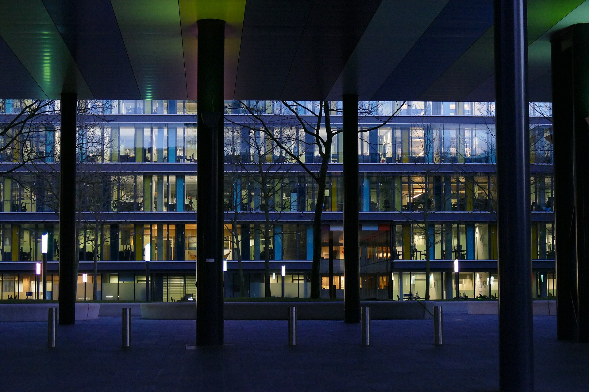

Begrijpelijke brieven
Wat we leerden van een jaar herschrijven, en wat we nu van u vragen
Spreker: [Naam spreker]
21 oktober 2026
[Pay-off van de organisatie]
Agenda
Waarom brieven anders moeten
Wat een onbegrepen brief kost
Wat we leerden
Vier stappen, en wat ze opleverden
Twee manieren om verder te gaan
Brief voor brief, of eerst de bouwstenen
Wat we van u vragen
Drie besluiten, vóór 1 december
Na afloop
kunt u kiezen hoe we verdergaan.

1
Hoofdstuk
Waarom brieven anders moeten
Wat een brief kost als hij niet begrepen wordt: bij de lezer, en bij ons
1
Hoofdstuk 1
Waarom brieven anders moeten
Wat een brief kost als hij niet begrepen wordt: bij de lezer, en bij ons
Een brief die niet begrepen wordt, kost twee keer
Wie de brief niet snapt, belt
Een op de vijf lezers belt binnen een week na de herinnering.
Wie hem verkeerd snapt, doet iets verkeerd
Een formulier komt onvolledig terug, of de termijn verloopt.
Op B1 leest bijna iedereen hem in één keer
Daar schrijven we naartoe, met de actie bovenaan.
Een brief die niet begrepen wordt, kost twee keer
Elke vraag die binnenkomt, is werk dat de brief had kunnen voorkomen.
- Wie de brief niet snapt, belt, mailt of komt langs.
- Wie hem verkeerd snapt, doet iets wat niet klopt.
- Op taalniveau B1 lezen de meeste mensen een brief in één keer.
Een brief die niet begrepen wordt, kost twee keer.
Wie de brief niet snapt, belt
Een op de vijf lezers belt binnen een week na de herinnering.
Wie hem verkeerd snapt, doet iets verkeerd
Een formulier komt onvolledig terug, of de termijn verloopt.
Op B1 leest bijna iedereen hem in één keer
Daar schrijven we naartoe, met de actie bovenaan.
Een brief die niet begrepen wordt, kost twee keer
- Wie de brief niet snapt, belt, mailt of komt langs.
- Wie hem verkeerd snapt, doet iets wat niet klopt.
- Elke vraag die binnenkomt, is werk dat de brief had kunnen voorkomen.
- Op taalniveau B1 lezen de meeste mensen een brief in één keer.
In één zin
Elke brief die we beter schrijven, scheelt een telefoontje.
Wie herschrijft, begint bij de lezer
We lieten vijf mensen elke brief hardop lezen. Waar ze stokten, begon het herschrijven.
- Wat moet ik doen, en wanneer? Dat staat nu bovenaan.
- Eén onderwerp per alinea, met een kop erboven.
- Wetsartikelen staan achteraan, voor wie ze zoekt.
Wie herschrijft, begint bij de lezer
We lieten vijf mensen elke brief hardop lezen. Waar ze stokten, begon het herschrijven.
- Wat moet ik doen, en wanneer? Dat staat nu bovenaan.
- Eén onderwerp per alinea, met een kop erboven.
- Wetsartikelen staan achteraan, voor wie ze zoekt.

Wie herschrijft, begint bij de lezer
We lieten vijf mensen elke brief hardop lezen. Waar ze stokten, begon het herschrijven.
Ministerie van Financiën
Den Haag
Wie herschrijft, begint bij de lezer
We lieten vijf mensen elke brief hardop lezen. Waar ze stokten, begon het herschrijven.
- Wat moet ik doen, en wanneer? Dat staat nu bovenaan.
- Eén onderwerp per alinea, met een kop erboven.
- Wetsartikelen staan achteraan, voor wie ze zoekt.
Lezers aan het woord
“Ik las de brief drie keer en wist nog steeds niet of ik iets moest doen. Uiteindelijk heb ik maar gebeld.”
— Deelnemer aan het leesonderzoek, voorjaar 2026
Ik las de brief drie keer en wist nog steeds niet of ik iets moest doen. Uiteindelijk heb ik maar gebeld.
— Deelnemer aan het leesonderzoek
Voorjaar 2026
Zo herschrijven we een brief, in vier stappen
Lezen met de lezer
Vijf mensen lezen de oude brief en denken hardop.
De kern bepalen
Wat moet de lezer weten, en wat moet hij doen?
Herschrijven
Op B1, met de actie bovenaan en één onderwerp per alinea.
Opnieuw lezen
Dezelfde vijf vragen. Pas dan gaat de brief de deur uit.
Het resultaat
Een brief die vijf lezers in één keer begrijpen.
Na het herschrijven bellen minder mensen na een brief
Bron: telefoonregistratie, januari–juni 2026 (fictieve cijfers)
Ruim een derde minder telefoontjes
- −37%
minder telefoontjes na een brief
Vier herschreven brieven samen
- 395
telefoontjes per 1.000 brieven
Was 630 met de oude brieven
- 4
brieven herschreven
Van de veertien die het meest bellen
Ruim een derde minder telefoontjes
−37%
minder telefoontjes na een brief
395 in plaats van 630 per 1.000 brieven. Doel voor eind 2027: de helft minder.
Eerst de bouwstenen kost tijd, maar geeft één toon
A · Brief voor brief
Elk team herschrijft zijn eigen brieven, met een schrijfcoach erbij.
- Eerste nieuwe brief na zes weken
- Elke brief klinkt een beetje anders
- Hetzelfde werk gebeurt vaker
B · Eerst de bouwstenen Voorstel
We maken eerst gedeelde zinnen en alinea's. Daarna herschrijft elk team.
- Eerste nieuwe brief na vier maanden
- Alle brieven spreken met één stem
- Een wetswijziging pas je één keer aan
De herinnering is als eerste aan de beurt
Vier brieven, op volgorde van telefoontjes per 1.000 (fictieve cijfers)
| Brief | Per jaar | Bellers per 1.000 | Start |
|---|
| Herinnering betaling | 1.200.000 | 210 | jan 2027 |
|---|
| Beschikking | 640.000 | 180 | mrt 2027 |
|---|
| Wijziging gegevens | 410.000 | 150 | mei 2027 |
|---|
| Ontvangstbevestiging | 900.000 | 90 | later |
|---|

Bedankt
Vragen of reacties over begrijpelijke brieven? Neem contact op.
[Naam spreker]
[e-mailadres]
[Pay-off van de organisatie]
Bedankt
Vragen of reacties over begrijpelijke brieven? Neem contact op.
[Naam spreker]
[e-mailadres]
[Pay-off van de organisatie]
Bedankt
[Naam spreker]
[e-mailadres]
Vragen of reacties over begrijpelijke brieven? Neem contact op.
[Pay-off van de organisatie]
Stelling
Een brief die je twee keer moet lezen, is een slechte brief.
Steek uw hand op als u het eens bent.
Stelling
Een brief die je twee keer moet lezen, is een slechte brief.
Dezelfde brief: korter, en de actie bovenaan
Voor
Ingevolge artikel 4:87 van de Algemene wet bestuursrecht delen wij u mede dat het verschuldigde bedrag…
Na
Betaal € 85 vóór 1 december
U heeft de rekening van september nog niet betaald. Betaal het bedrag vóór 1 december.
Kunt u niet betalen? Bel ons, dan zoeken we samen een oplossing.
Zo pakken we het aan in 2027
Elke twee maanden een brief, op volgorde van hoeveel mensen erover bellen.
- jan
Herinnering
De brief die het meest belt
- mrt
Beschikking
Met de nieuwe bouwstenen
- mei
Wijziging
Korter, actie bovenaan
- okt
Evaluatie
Opnieuw meten: bellen er minder?
Klaar
Drie afspraken voor elke brief
Elke brief begint bij de lezer
De actie bovenaan
Wat moet de lezer doen, en wanneer? Dat staat in de eerste zin.
Eén onderwerp per alinea
Met een kop erboven, zodat de lezer kan scannen.
Getest met lezers
Vijf mensen lezen mee voordat een brief de deur uitgaat.
Waar onze brieven landen
Den Haag
Ridderzaal
Ministerie van Financiën
Binnenhof
Wat u onthoudt
- Een onbegrepen brief kost twee keer: bij de lezer en bij ons.
- Herschrijven met lezers scheelt ruim een derde van de telefoontjes.
- Met gedeelde bouwstenen spreken alle brieven met één stem.